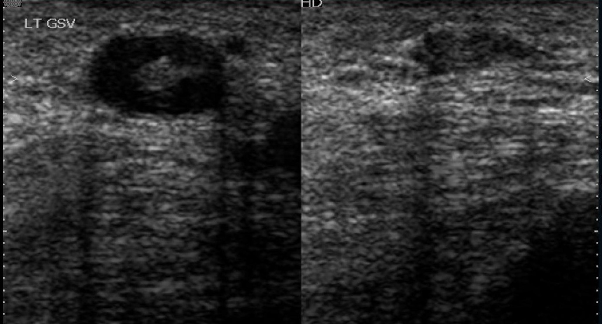

Question 1
Front
The image attached demonstrates which of the following?
Choices

Answer: B. Chronic venous thrombosis with recanalization
Feedback:
Note the fibrous strands of the thrombus as it becomes denser and atrophies within the lumen. The anechoic areas are thrombus free areas which allow some flow through the vessel.
Note the fibrous strands of the thrombus as it becomes denser and atrophies within the lumen. The anechoic areas are thrombus free areas which allow some flow through the vessel.
Research & Study Guide
Question Type
Core review concept
Core Idea
Note the fibrous strands of the thrombus as it becomes denser and atrophies within the lumen.
What To Remember
The anechoic areas are thrombus free areas which allow some flow through the vessel.
Focus Terms
Self-Check
- Can I explain in one sentence why B. Chronic venous thrombosis with recanalization is right?
- What clue in the question makes this a core review concept problem?
- Could I define or recognize these terms without notes: thrombus, areas, image, attached?